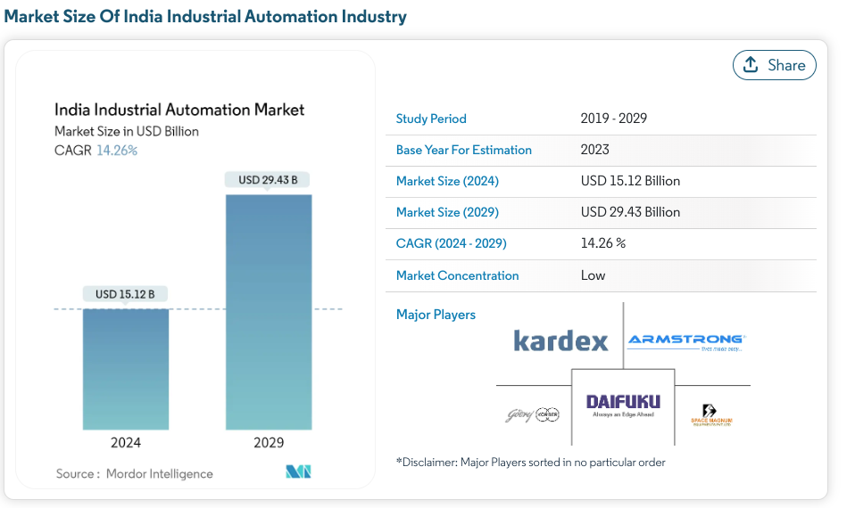

Easwari Engineering College
310621243048
310621243022
310621243020

Challenge: Handling large datasets and documents with high variability in structure.
RecursiveCharacterTextSplitter for efficient text processing, ensuring even large documents were split and processed correctly.Challenge: Managing memory usage with large-scale embeddings.
Challenge: Training the LLaMA model for fine-tuning.